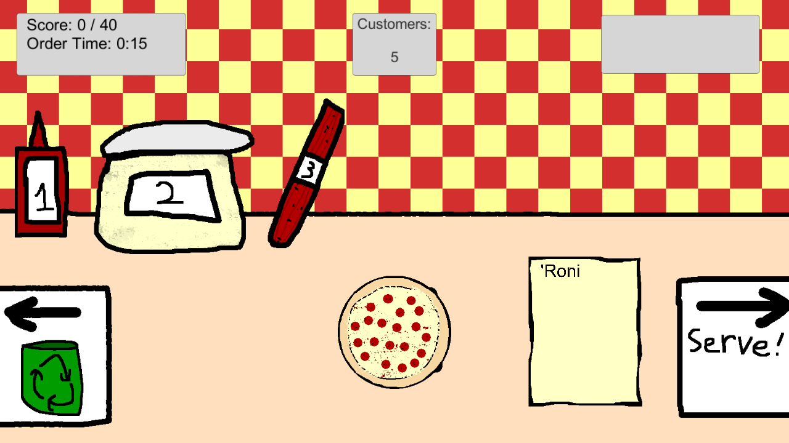

You're the new pizza maker at the small, local shop. Make increasingly complicated pizzas as the shop slowly grows, and then play survival mode and see how long you can last until the increasingly impatient customers storm off!
Pizzas was my submission for the Ludum Dare 40 jam. I made the vast majority of it in the span of about 48 hours, but it wasn't quite finished in time for the compo. The engine is Unity, the BGM was made using LMMS, and the SFX using bxfr. The art was made in GIMP.
